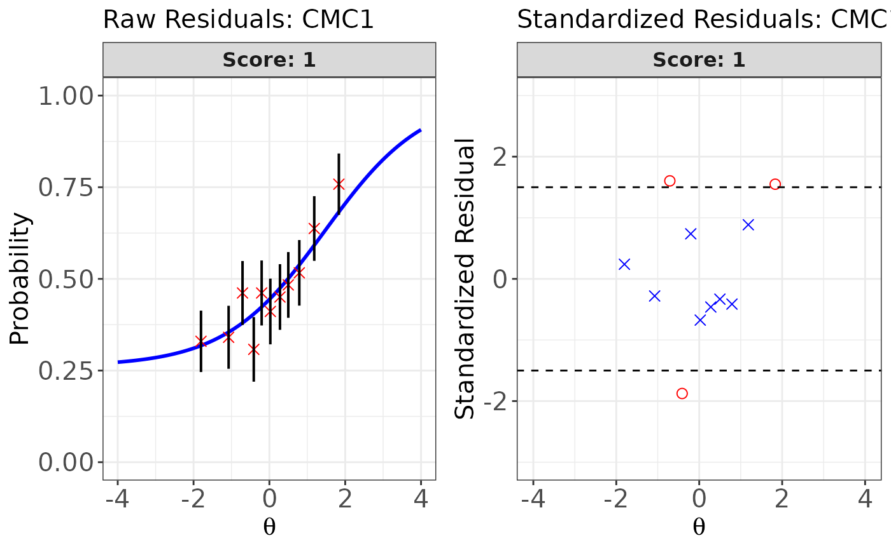
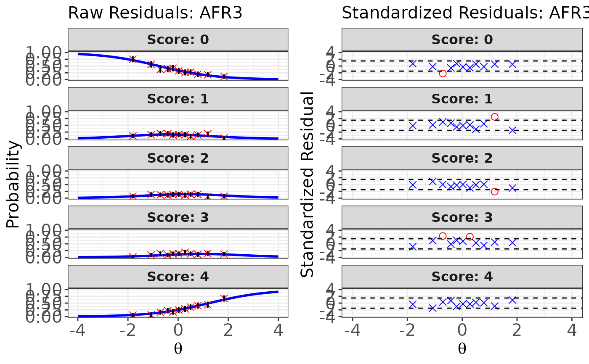
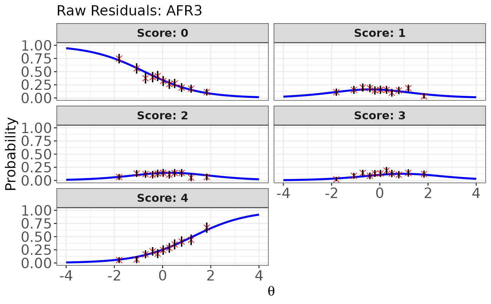
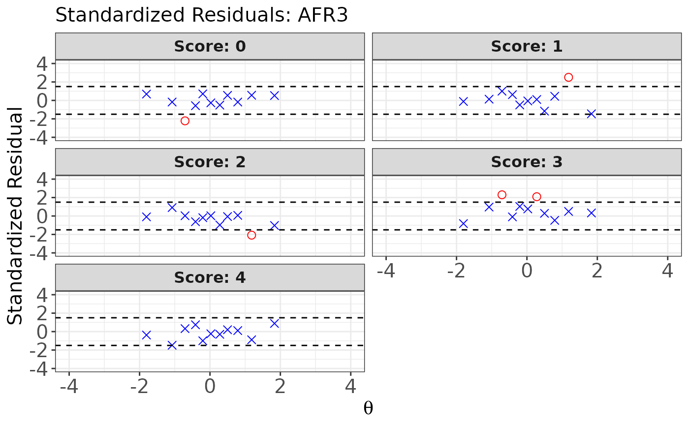

This method provides graphical displays of the residuals between observed data and model-based predictions (Hambleton et al., 1991). For each score category of an item, it generates two types of residual plots: (a) the raw residual plot and (b) the standardized residual plot. Note that for dichotomous items, residual plots are drawn only for score category 1.
Usage
# S3 method for class 'irtfit'
plot(
x,
item.loc = NULL,
type = "both",
ci.method = c("wald", "wilson", "wilson.cr"),
show.table = TRUE,
layout.col = 2,
xlab.text,
ylab.text,
main.text,
lab.size = 15,
main.size = 15,
axis.size = 15,
line.size = 1,
point.size = 2.5,
strip.size = 12,
ylim.icc = c(0, 1),
ylim.sr.adjust = FALSE,
ylim.sr = c(-4, 4),
...
)Arguments
- x
x An object of class
irtfitobtained fromirtfit().- item.loc
An integer specifying the position of the item to be plotted (i.e., the nth item in the item set). See Details below.
- type
A character string indicating the type of residual plot to be displayed. Available options are:
"icc"for the raw residual plot"sr"for the standardized residual plot"both"for displaying both plots
Default is
"both".- ci.method
A character string specifying the method used to compute confidence intervals for the raw residual plot. Available options are:
"wald"for the Wald method"wilson"for the Wilson score interval"wilson.cr"for the Wilson interval with continuity correction
Default is
"wald". See Details below.- show.table
A logical value indicating whether to return the contingency table used for drawing the residual plots of the specified item. If
TRUE, the function returns the same contingency table stored in the internalcontingency.plotobject of theirtfitobject. Default isTRUE.- layout.col
An integer specifying the number of columns in the panel layout when plotting residuals for a polytomous item. Default is 2.
- xlab.text
A character string specifying the title for the x-axis. If omitted, a default label is used.
- ylab.text
A character string specifying the title for the y-axis. If
type = "both", a character vector of length two can be provided, corresponding to the y-axis titles for the raw residual and standardized residual plots, respectively. If omitted, default labels are used.- main.text
A character string specifying the main title for the plot. If
type = "both", a character vector of length two can be provided, corresponding to the main titles for the raw residual and standardized residual plots, respectively. If omitted, default titles are used.- lab.size
Numeric value specifying the font size of axis titles. Default is 15.
- main.size
Numeric value specifying the font size of the plot title. Default is 15.
- axis.size
Numeric value specifying the font size of axis tick labels. Default is 15.
- line.size
Numeric value specifying the thickness of plot lines. Default is 1.
- point.size
A numeric value specifying the size of points. Default is 2.5.
- strip.size
A numeric value specifying the size of facet label text. Default is 12.
- ylim.icc
A numeric vector of length two specifying the y-axis limits for the raw residual plot. Default is c(0, 1).
- ylim.sr.adjust
Logical. If
TRUE, the y-axis range for the standardized residual plot is automatically adjusted based on the maximum residual value for each item. IfFALSE, the range is fixed according to the values specified in theylim.srargument. Default isFALSE.- ylim.sr
A numeric vector of length two specifying the y-axis limits for the standardized residual plot. Default is c(-4, 4).
- ...
Additional arguments passed to
ggplot2::ggplot()from the ggplot2 package.
Value
This method displays the IRT raw residual plot, standardized
residual plot, or both for the specified item. When show.table = TRUE, a
contingency table used to generate the residual plots is also returned.
See irtfit() for more details about the contingency table.
Details
All plots are generated using the ggplot2 package.
Once the IRT model fit analysis is completed using irtfit(), the
resulting object of class irtfit can be used to draw raw and standardized
residual plots.These plots are primarily based on the information stored in
the internal object contingency.plot.
Because residual plots are generated for one item at a time, you must
specify which item to evaluate by providing an integer value for the
item.loc argument, indicating the item's position in the test form.
For example, to draw residual plots for the third item, set item.loc = 3.
For the raw residual plot, the ci.method argument determines the method
used to estimate confidence intervals. The available methods are:
"wald": Wald interval based on the normal approximation (Laplace, 1812)"wilson": Wilson score interval (Wilson, 1927)"wilson.cr": Wilson score interval with continuity correction (Newcombe, 1998)
For more information, see
https://en.wikipedia.org/wiki/Binomial_proportion_confidence_interval.
Note that the width of the confidence interval is governed by the
\(\alpha\)-level specified in the alpha argument of the
irtfit() function.
For the standardized residual plot, residuals exceeding the threshold
specified in the overSR argument of the irtfit() function
are displayed as circles. Residuals that do not exceed the threshold
are displayed as crosses.
References
Hambleton, R. K., Swaminathan, H., & Rogers, H. J. (1991).Fundamentals of item response theory. Newbury Park, CA: Sage.
Laplace, P. S. (1820).Theorie analytique des probabilites (in French). Courcier.
Newcombe, R. G. (1998). Two-sided confidence intervals for the single proportion: comparison of seven methods. Statistics in medicine, 17(8), 857-872.
Wilson, E. B. (1927). Probable inference, the law of succession, and statistical inference. Journal of the American Statistical Association, 22(158), 209-212.
Author
Hwanggyu Lim hglim83@gmail.com
Examples
## Import the "-prm.txt" output file from flexMIRT
flex_sam <- system.file("extdata", "flexmirt_sample-prm.txt", package = "irtQ")
# Select the first two dichotomous items and the last polytomous item
x <- bring.flexmirt(file = flex_sam, "par")$Group1$full_df[c(1:2, 55), ]
# Generate examinees' abilities from N(0, 1)
set.seed(23)
score <- rnorm(1000, mean = 0, sd = 1)
# Simulate response data
data <- simdat(x = x, theta = score, D = 1)
# \donttest{
# Compute fit statistics
fit <- irtfit(
x = x, score = score, data = data, group.method = "equal.freq",
n.width = 11, loc.theta = "average", range.score = c(-4, 4), D = 1,
alpha = 0.05, overSR = 1.5
)
# Residual plots for the first item (dichotomous item)
plot(x = fit, item.loc = 1, type = "both", ci.method = "wald",
show.table = TRUE, ylim.sr.adjust = TRUE)

#> interval point total obs.freq.0 obs.freq.1 obs.prop.0
#> 1 [-3.043234,-1.249466) -1.80368087 91 61 30 0.6703297
#> 2 [-1.249466,-0.8911049) -1.07489814 91 60 31 0.6593407
#> 3 [-0.8911049,-0.5332769) -0.70847940 91 49 42 0.5384615
#> 4 [-0.5332769,-0.3013328) -0.41173080 91 63 28 0.6923077
#> 5 [-0.3013328,-0.08359202) -0.20381460 91 49 42 0.5384615
#> 6 [-0.08359202,0.1602087) 0.02498348 90 53 37 0.5888889
#> 7 [0.1602087,0.3853747) 0.27922826 91 50 41 0.5494505
#> 8 [0.3853747,0.6428548) 0.49895029 91 47 44 0.5164835
#> 9 [0.6428548,0.9706215) 0.78936255 91 44 47 0.4835165
#> 10 [0.9706215,1.393539) 1.18366284 91 33 58 0.3626374
#> 11 [1.393539,2.903912] 1.83285727 91 22 69 0.2417582
#> obs.prop.1 exp.prob.0 exp.prob.1 raw.rsd.0 raw.rsd.1 se.0
#> 1 0.3296703 0.6820047 0.3179953 -0.01167504 0.01167504 0.04881838
#> 2 0.3406593 0.6453037 0.3546963 0.01403700 -0.01403700 0.05015217
#> 3 0.4615385 0.6200716 0.3799284 -0.08161006 0.08161006 0.05088047
#> 4 0.3076923 0.5958021 0.4041979 0.09650557 -0.09650557 0.05144312
#> 5 0.4615385 0.5766529 0.4233471 -0.03819133 0.03819133 0.05179464
#> 6 0.4111111 0.5535226 0.4464774 0.03536631 -0.03536631 0.05240180
#> 7 0.4505495 0.5253606 0.4746394 0.02408992 -0.02408992 0.05234678
#> 8 0.4835165 0.4990790 0.5009210 0.01740451 -0.01740451 0.05241415
#> 9 0.5164835 0.4619426 0.5380574 0.02157391 -0.02157391 0.05226219
#> 10 0.6373626 0.4082919 0.5917081 -0.04565452 0.04565452 0.05152505
#> 11 0.7582418 0.3173593 0.6826407 -0.07560103 0.07560103 0.04879227
#> se.1 std.rsd.0 std.rsd.1
#> 1 0.04881838 -0.2391525 0.2391525
#> 2 0.05015217 0.2798881 -0.2798881
#> 3 0.05088047 -1.6039565 1.6039565
#> 4 0.05144312 1.8759664 -1.8759664
#> 5 0.05179464 -0.7373605 0.7373605
#> 6 0.05240180 0.6749065 -0.6749065
#> 7 0.05234678 0.4601987 -0.4601987
#> 8 0.05241415 0.3320574 -0.3320574
#> 9 0.05226219 0.4128016 -0.4128016
#> 10 0.05152505 -0.8860644 0.8860644
#> 11 0.04879227 -1.5494469 1.5494469
# Residual plots for the third item (polytomous item)
plot(x = fit, item.loc = 3, type = "both", ci.method = "wald",
show.table = FALSE, ylim.sr.adjust = TRUE)

# Raw residual plot for the third item (polytomous item)
plot(x = fit, item.loc = 3, type = "icc", ci.method = "wald",
show.table = TRUE, ylim.sr.adjust = TRUE)

#> interval point total obs.freq.0 obs.freq.1 obs.freq.2
#> 1 [-3.043234,-1.249466) -1.80368087 91 68 10 6
#> 2 [-1.249466,-0.8911049) -1.07489814 91 51 14 12
#> 3 [-0.8911049,-0.5332769) -0.70847940 91 34 18 11
#> 4 [-0.5332769,-0.3013328) -0.41173080 91 36 17 10
#> 5 [-0.3013328,-0.08359202) -0.20381460 91 38 13 12
#> 6 [-0.08359202,0.1602087) 0.02498348 90 29 14 13
#> 7 [0.1602087,0.3853747) 0.27922826 91 24 14 10
#> 8 [0.3853747,0.6428548) 0.49895029 91 25 9 13
#> 9 [0.6428548,0.9706215) 0.78936255 91 18 13 13
#> 10 [0.9706215,1.393539) 1.18366284 91 16 17 5
#> 11 [1.393539,2.903912] 1.83285727 91 10 3 6
#> obs.freq.3 obs.freq.4 obs.prop.0 obs.prop.1 obs.prop.2 obs.prop.3 obs.prop.4
#> 1 2 5 0.7472527 0.10989011 0.06593407 0.02197802 0.05494505
#> 2 8 6 0.5604396 0.15384615 0.13186813 0.08791209 0.06593407
#> 3 13 15 0.3736264 0.19780220 0.12087912 0.14285714 0.16483516
#> 4 8 20 0.3956044 0.18681319 0.10989011 0.08791209 0.21978022
#> 5 12 16 0.4175824 0.14285714 0.13186813 0.13186813 0.17582418
#> 6 12 22 0.3222222 0.15555556 0.14444444 0.13333333 0.24444444
#> 7 17 26 0.2637363 0.15384615 0.10989011 0.18681319 0.28571429
#> 8 12 32 0.2747253 0.09890110 0.14285714 0.13186813 0.35164835
#> 9 10 37 0.1978022 0.14285714 0.14285714 0.10989011 0.40659341
#> 10 13 40 0.1758242 0.18681319 0.05494505 0.14285714 0.43956044
#> 11 11 61 0.1098901 0.03296703 0.06593407 0.12087912 0.67032967
#> exp.prob.0 exp.prob.1 exp.prob.2 exp.prob.3 exp.prob.4 raw.rsd.0
#> 1 0.71477689 0.11375163 0.06836062 0.03855298 0.06455787 0.032475855
#> 2 0.56957599 0.14884791 0.10278367 0.06320332 0.11558912 -0.009136425
#> 3 0.48976550 0.15944983 0.11992887 0.07818623 0.15266958 -0.116139125
#> 4 0.42532229 0.16264618 0.13183092 0.09078262 0.18941799 -0.029717899
#> 5 0.38151012 0.16172964 0.13839299 0.09938634 0.21898091 0.036072294
#> 6 0.33545340 0.15777543 0.14341041 0.10817376 0.25518700 -0.013231182
#> 7 0.28773759 0.15011991 0.14585476 0.11651096 0.29977678 -0.024001328
#> 8 0.24994169 0.14123048 0.14514018 0.12201185 0.34167580 0.024783588
#> 9 0.20531675 0.12719333 0.14027664 0.12622977 0.40098351 -0.007514555
#> 10 0.15461091 0.10608597 0.12760487 0.12566293 0.48603533 0.021213268
#> 11 0.09383143 0.07259205 0.09796229 0.11011249 0.62550173 0.016058676
#> raw.rsd.1 raw.rsd.2 raw.rsd.3 raw.rsd.4 se.0 se.1
#> 1 -0.003861524 -0.0024265574 -0.016574958 -0.009612815 0.04733222 0.03328403
#> 2 0.004998247 0.0290844659 0.024708768 -0.049655056 0.05190431 0.03731249
#> 3 0.038352370 0.0009502512 0.064670916 0.012165589 0.05240326 0.03837719
#> 4 0.024167011 -0.0219408122 -0.002870528 0.030362229 0.05182634 0.03868617
#> 5 -0.018872495 -0.0065248628 0.032481794 -0.043156729 0.05092120 0.03859812
#> 6 -0.002219870 0.0010340388 0.025159570 -0.010742557 0.04976885 0.03842487
#> 7 0.003726247 -0.0359646468 0.070302223 -0.014062496 0.04745671 0.03744357
#> 8 -0.042329386 -0.0022830374 0.009856283 0.009972552 0.04538854 0.03650748
#> 9 0.015663809 0.0025805066 -0.016339656 0.005609896 0.04234367 0.03492774
#> 10 0.080727222 -0.0726598139 0.017194216 -0.046474892 0.03789899 0.03228168
#> 11 -0.039625020 -0.0320282211 0.010766629 0.044827936 0.03056736 0.02719940
#> se.2 se.3 se.4 std.rsd.0 std.rsd.1 std.rsd.2
#> 1 0.02645491 0.02018231 0.02576098 0.6861257 -0.11601733 -0.09172429
#> 2 0.03183391 0.02550774 0.03351698 -0.1760244 0.13395641 0.91363168
#> 3 0.03405650 0.02814272 0.03770352 -2.2162576 0.99935330 0.02790220
#> 4 0.03546419 0.03011719 0.04107602 -0.5734130 0.62469381 -0.61867504
#> 5 0.03619853 0.03136259 0.04335241 0.7083944 -0.48894855 -0.18025213
#> 6 0.03694498 0.03274009 0.04595488 -0.2658527 -0.05777171 0.02798861
#> 7 0.03700032 0.03363282 0.04802823 -0.5057521 0.09951635 -0.97200911
#> 8 0.03692501 0.03431031 0.04971716 0.5460319 -1.15947164 -0.06182903
#> 9 0.03640419 0.03481439 0.05137620 -0.1774658 0.44846325 0.07088489
#> 10 0.03497595 0.03474740 0.05239380 0.5597317 2.50071304 -2.07742206
#> 11 0.03116170 0.03281445 0.05073626 0.5253537 -1.45683459 -1.02780733
#> std.rsd.3 std.rsd.4
#> 1 -0.82126153 -0.3731541
#> 2 0.96867740 -1.4814898
#> 3 2.29796274 0.3226645
#> 4 -0.09531193 0.7391716
#> 5 1.03568597 -0.9954863
#> 6 0.76846374 -0.2337631
#> 7 2.09028632 -0.2927965
#> 8 0.28726885 0.2005857
#> 9 -0.46933624 0.1091925
#> 10 0.49483460 -0.8870305
#> 11 0.32810632 0.8835483
# Standardized residual plot for the third item (polytomous item)
plot(x = fit, item.loc = 3, type = "sr", ci.method = "wald",
show.table = TRUE, ylim.sr.adjust = TRUE)

#> interval point total obs.freq.0 obs.freq.1 obs.freq.2
#> 1 [-3.043234,-1.249466) -1.80368087 91 68 10 6
#> 2 [-1.249466,-0.8911049) -1.07489814 91 51 14 12
#> 3 [-0.8911049,-0.5332769) -0.70847940 91 34 18 11
#> 4 [-0.5332769,-0.3013328) -0.41173080 91 36 17 10
#> 5 [-0.3013328,-0.08359202) -0.20381460 91 38 13 12
#> 6 [-0.08359202,0.1602087) 0.02498348 90 29 14 13
#> 7 [0.1602087,0.3853747) 0.27922826 91 24 14 10
#> 8 [0.3853747,0.6428548) 0.49895029 91 25 9 13
#> 9 [0.6428548,0.9706215) 0.78936255 91 18 13 13
#> 10 [0.9706215,1.393539) 1.18366284 91 16 17 5
#> 11 [1.393539,2.903912] 1.83285727 91 10 3 6
#> obs.freq.3 obs.freq.4 obs.prop.0 obs.prop.1 obs.prop.2 obs.prop.3 obs.prop.4
#> 1 2 5 0.7472527 0.10989011 0.06593407 0.02197802 0.05494505
#> 2 8 6 0.5604396 0.15384615 0.13186813 0.08791209 0.06593407
#> 3 13 15 0.3736264 0.19780220 0.12087912 0.14285714 0.16483516
#> 4 8 20 0.3956044 0.18681319 0.10989011 0.08791209 0.21978022
#> 5 12 16 0.4175824 0.14285714 0.13186813 0.13186813 0.17582418
#> 6 12 22 0.3222222 0.15555556 0.14444444 0.13333333 0.24444444
#> 7 17 26 0.2637363 0.15384615 0.10989011 0.18681319 0.28571429
#> 8 12 32 0.2747253 0.09890110 0.14285714 0.13186813 0.35164835
#> 9 10 37 0.1978022 0.14285714 0.14285714 0.10989011 0.40659341
#> 10 13 40 0.1758242 0.18681319 0.05494505 0.14285714 0.43956044
#> 11 11 61 0.1098901 0.03296703 0.06593407 0.12087912 0.67032967
#> exp.prob.0 exp.prob.1 exp.prob.2 exp.prob.3 exp.prob.4 raw.rsd.0
#> 1 0.71477689 0.11375163 0.06836062 0.03855298 0.06455787 0.032475855
#> 2 0.56957599 0.14884791 0.10278367 0.06320332 0.11558912 -0.009136425
#> 3 0.48976550 0.15944983 0.11992887 0.07818623 0.15266958 -0.116139125
#> 4 0.42532229 0.16264618 0.13183092 0.09078262 0.18941799 -0.029717899
#> 5 0.38151012 0.16172964 0.13839299 0.09938634 0.21898091 0.036072294
#> 6 0.33545340 0.15777543 0.14341041 0.10817376 0.25518700 -0.013231182
#> 7 0.28773759 0.15011991 0.14585476 0.11651096 0.29977678 -0.024001328
#> 8 0.24994169 0.14123048 0.14514018 0.12201185 0.34167580 0.024783588
#> 9 0.20531675 0.12719333 0.14027664 0.12622977 0.40098351 -0.007514555
#> 10 0.15461091 0.10608597 0.12760487 0.12566293 0.48603533 0.021213268
#> 11 0.09383143 0.07259205 0.09796229 0.11011249 0.62550173 0.016058676
#> raw.rsd.1 raw.rsd.2 raw.rsd.3 raw.rsd.4 se.0 se.1
#> 1 -0.003861524 -0.0024265574 -0.016574958 -0.009612815 0.04733222 0.03328403
#> 2 0.004998247 0.0290844659 0.024708768 -0.049655056 0.05190431 0.03731249
#> 3 0.038352370 0.0009502512 0.064670916 0.012165589 0.05240326 0.03837719
#> 4 0.024167011 -0.0219408122 -0.002870528 0.030362229 0.05182634 0.03868617
#> 5 -0.018872495 -0.0065248628 0.032481794 -0.043156729 0.05092120 0.03859812
#> 6 -0.002219870 0.0010340388 0.025159570 -0.010742557 0.04976885 0.03842487
#> 7 0.003726247 -0.0359646468 0.070302223 -0.014062496 0.04745671 0.03744357
#> 8 -0.042329386 -0.0022830374 0.009856283 0.009972552 0.04538854 0.03650748
#> 9 0.015663809 0.0025805066 -0.016339656 0.005609896 0.04234367 0.03492774
#> 10 0.080727222 -0.0726598139 0.017194216 -0.046474892 0.03789899 0.03228168
#> 11 -0.039625020 -0.0320282211 0.010766629 0.044827936 0.03056736 0.02719940
#> se.2 se.3 se.4 std.rsd.0 std.rsd.1 std.rsd.2
#> 1 0.02645491 0.02018231 0.02576098 0.6861257 -0.11601733 -0.09172429
#> 2 0.03183391 0.02550774 0.03351698 -0.1760244 0.13395641 0.91363168
#> 3 0.03405650 0.02814272 0.03770352 -2.2162576 0.99935330 0.02790220
#> 4 0.03546419 0.03011719 0.04107602 -0.5734130 0.62469381 -0.61867504
#> 5 0.03619853 0.03136259 0.04335241 0.7083944 -0.48894855 -0.18025213
#> 6 0.03694498 0.03274009 0.04595488 -0.2658527 -0.05777171 0.02798861
#> 7 0.03700032 0.03363282 0.04802823 -0.5057521 0.09951635 -0.97200911
#> 8 0.03692501 0.03431031 0.04971716 0.5460319 -1.15947164 -0.06182903
#> 9 0.03640419 0.03481439 0.05137620 -0.1774658 0.44846325 0.07088489
#> 10 0.03497595 0.03474740 0.05239380 0.5597317 2.50071304 -2.07742206
#> 11 0.03116170 0.03281445 0.05073626 0.5253537 -1.45683459 -1.02780733
#> std.rsd.3 std.rsd.4
#> 1 -0.82126153 -0.3731541
#> 2 0.96867740 -1.4814898
#> 3 2.29796274 0.3226645
#> 4 -0.09531193 0.7391716
#> 5 1.03568597 -0.9954863
#> 6 0.76846374 -0.2337631
#> 7 2.09028632 -0.2927965
#> 8 0.28726885 0.2005857
#> 9 -0.46933624 0.1091925
#> 10 0.49483460 -0.8870305
#> 11 0.32810632 0.8835483
# }